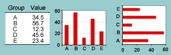
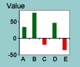
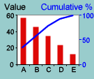
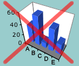

When
there is a meaningful total, a second axis can be added to the bar chart showing
percentages.
When
there is a meaningful total, a second axis can be added to the bar chart showing
percentages.Information is often presented more clearly in a graph than in the corresponding table of values.
A simple table of quantities can be displayed in a bar chart. Horizontal bars are better if there are many groups or if the group names are long.
Variations
If some of the quantities are negative (e.g. population changes), their bars should be drawn below the zero-axis.
When
there is a meaningful total, a second axis can be added to the bar chart showing
percentages.
If there is no natural ordering for the bars, the information is often easier to understand if bars are sorted by value. Cumulative percentages can be added if the total is meaningful.
Chartjunk
Avoid the temptation to draw 3-dimensional versions of bar charts or otherwise 'artistically' embellishing them. These modifications usually make it harder to understand the data and can mislead. Replacing bars with pictures is particularly misleading.
Histograms
 A
histogram is similar to a bar chart, but is only used when:
A
histogram is similar to a bar chart, but is only used when:
The histogram must be defined differently if the class widths differ.